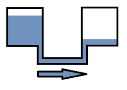

Programación invariante: fundamentos
En la sección anterior vimos un ejemplo del potencial de resolución de problemas que ofrece combinar la recursividad y una instrucción condicional. Y si observamos bien el comportamiento de ese programa en específico podemos notar que actúa de modo similar a un bucle (un conjunto de instrucciones que se repite hasta lograr un resultado) donde cada ejecución recursiva se puede ver como una iteración del bucle. Esto muestra que, de hecho, uno de los usos potenciales de la recursión es definir bucles. Y los bucles, estas partes de los programas que se repiten hasta que se cumpla cierta condición, son una técnica importante en todos los paradigmas de programación. De hecho, son un caso especial de recursión, llamado recursividad por cola (tail recursion), en el que la llamada recursiva es la última operación que realiza la función. Hay por lo tanto, otros modos de implementar la recursividad. Pero, por ahora nos centraremos en su uso como bucles, y en concreto, en una técnica conocida como programación invariante que nos permite programar bucles correctos y eficientes. Y no es una cosa menor, los bucles pueden ser complicados de programar, especialmente cuando se trata de fijar sus condiciones límites. Con la programación invariante tendremos un método para asegurarnos de que nuestros bucles hacen exactamente lo correcto, que de hecho, será aplicable no sólo en el estilo funcional, sino también a los bucles usados en cualquier otro paradigma, incluyendo a los paradigmas imperativos.
El principio de los vasos comunicantes
La forma de resolver el problema de sumar los dígitos de un número en base 10 se veía tan simple y natural que podríamos sentir que es la única forma de hacerlo usando recursividad. Sin embargo, esta intuición está completamente errada. Hay una forma muy diferente de resolver el problema que, en realidad, es mucho mejor. Pero antes de revisar esa otra solución y con el fin de comprender el principio que la sustenta veamos primero un ejemplo más sencillo, el clásico calcular el factorial de un número.
Escribamos primero una especificación de la función (el problema que vamos a resolver). Una especificación no es más que una fórmula matemática que describe que calcula una función. En este caso sería
// Función factorial
// 0! = 1
// n! = n*(n-1)*...*2*1 cuando n > 0
Bien, perfectamente podríamos traducir directamente lo anterior a un programa y así resolver este problema.
fun fact1(n):
if n == 0 then return 1
else
return n * fact1(n - 1)
end
end
El código anterior funciona bien, de hecho, sigue casi de manera literal la definición matemática o especificación de la función. Sin embargo, esta es sólo una forma de implementarla, hay otra completamente distinta y que es mucho mejor. Esta otra forma comienza con algo que llamamos invariante. Una invariante es una fórmula matemática que se cumple durante toda la ejecución de un bucle y a partir de la cual podemos derivar la especificación de la función que queremos implementar. El proceso anterior resume, de hecho, lo que se conoce como programación invariante. Revisemos ahora como podemos aplicar esta técnica para resolver el problema de calcular un factorial.
El primer paso es definir nuestra invariante. Y Como se mencionó más arriba esta debe ser una fórmula matemática que sea verdadera durante cada una de las iteraciones de un bucle. De hecho, de ahí el nombre de invariante (pues no varía su valor de verdad). Este paso es el primero y el más importante, pues será a partir de esta invariante que construiremos la especificación de nuestra función. Ahora cabe preguntarse, ¿Cómo encontramos esa invariante?. Para ello podemos aplicar un enfoque que se conoce como principio de los vasos comunicantes. Ya se entenderá bien el porque lleva este nombre, por ahora centremos nuestra atención a cómo definimos la invariante. En este enfoque lo que hacemos es definir una fórmula que divida el trabajo en dos partes. De modo que tomamos la expresión (el trabajo que queremos realizar), y nos inventamos una fórmula que la divida en dos. En este caso nos inventamos esto:
Con esto hemos dividido el cálculo de como un producto entre dos valores arbitrarios y , siendo cada valor una de las dos partes. Ahora, ¿Cómo hacemos que esta expresión sea una invariante?. Lo único que necesitamos para que lo sea es que la fórmula sea verdadera en cada iteración del bucle, y eso no es muy complicado de conseguir la verdad. Simplemente definimos un bucle que tome inicialmente dos variables y , y luego el truco es que a medida disminuye, vaya aumentando de modo que siempre se cumpla que . Luego, tras un par de iteraciones finalizamos el bucle cuando sea igual a , momento en el que el valor de será igual a la respuesta que buscamos. Ya con esto tenemos casi todo listo. Ya tenemos nuestra fórmula junto a una definición del bucle que la hace una invariante, y a partir de la cuál podemos derivar el resultado que buscamos. A continuación se pueden ver los valores que van tomando y en las sucesivas iteraciones en un caso en general:
Y aquí para el caso para concreto de
Para finalizar, sólo nos queda implementar la idea en una función. En este caso cada iteración irá tomando dos valores y , de modo que la función que definamos tomará dos argumentos, uno representando a cada valor. En cuanto a las sucesivas llamadas recursivas, hasta ahora sólo hemos mencionado que irá disminuyendo en 1, y de solo hemos dicho que irá aumentando. Queda, por lo tanto, definir en cuánto irá aumentando . Pero no es nada complicado de determinar. Si se observan las igualdades mostradas más arribas, rápidamente uno puedo notar que el patrón de crecimiento de es que va siendo multiplicado por el valor de en cada iteración. Podemos concluir, por lo tanto, que en llamada recursiva tendremos que llamar a la función con los argumentos y . Finalmente, la recursión debe terminar cuando sea igual a 0, en cuyo caso, contendrá la respuesta que buscamos, y por lo tanto, será el valor a retornar. Con esto ya tenemos todos los datos necesarios para armar nuestro código y obtener la implementación que se ve a continuación:
fun fact2(i, a):
if i == 0 then return a
else
return fact2(i-1, i*a)
end
end
Nota: Ahora que ya entendemos como funciona el enfoque, no debería sorprender el nombre que recibe. El término principio de los vasos comunicantes viene de la analogía entre la lógica que propone con dos vasos conectados de tal forma que poco a poco uno va disminuyendo su volumen de líquido, mientras el otro va recibiendo el líquido que pierde este otro vaso.

Nota2: Cuando se aplica el principio de vasos comunicantes, la segunda variable, aquella que va recolectando llamada a llamada el total de la operación, también se la identifica comúnmente con el término de acumulador, pues es la variable que se encarga de ir acumulando el resultado de múltiples operaciones.
Bien, tal como mencionamos, hemos obtenido una solución completamente diferente.
Así que efectivamente había otra forma de resolverlo. En particular, usando
programación invariante, y aún más específico, aplicando el principio de los
vasos comunicantes para obtener nuestra invariante. Siguiendo este enfoque,
definimos una fórmula a partir de dividir en dos partes la expresión original,
y luego iteramos disminuyendo una de las partes, mientras aumentando otra, de modo
que la fórmula siempre se cumpla. Todo bien, sin embargo, aún nos queda un detalle
que aclarar. Aparte de decir que había una solución completamente distinta, también
mencionamos que esta otra solución era «mejor». ¿Y en qué sentido esta solución es
mejor a la anterior? Si tomamos cómo criterio el número de iteraciones, claramente
la ventaja no está allí, pues ambos algoritmos realizan un total de iteraciones.
La ventaja de este último, más que en el tiempo, está en el espacio de memoria que
utiliza. En el primer caso (fact1), cuando en una llamada de la función se
alcanza la instrucción return n * fact(n-1), la función debe esperar la resolución
de fact(n - 1) antes de poder calcular n * fact(n - 1). Eso implica que mientras se
espera que fact(n - 1) termine de ejecutarse, se deba almacenar la operación completa n * fact(n - 1)
en algún lugar de la memoria. En otras palabras el programa debe recordar
qué hacer con el valor de retorno hasta, efectivamente, contar con ese valor;
y eso, consume memoria. Y no poca en realidad, considerando que se realizan n
llamadas recursivas en total, de modo que en algún momento tendrá n - 1
operaciones que almacenar!. Por el otro lado, nuestra versión aplicando programación invariante
es mucho más económica por el simple hecho de que la llamada recursiva es la última acción
que realiza la función, y por lo tanto, cuando finalice esa llamada recursiva no es necesario
regresar a la función anterior para realizar alguna operación adicional sobre ese valor. No
hay necesidad de almacenar en memoria una operación, un «qué hacer» con el valor obtenido
al finalizar la ejecución de la llamada recursiva, y esa es una tremenda ventaja de
las soluciones obtenidas mediante la programación invariante. A estas soluciones
los compiladores/intérpretes las pueden tratar como si se trataran de bucles. De
hecho, como ya se mencionó al inicio, los bucles son un tipo específico de recursión,
llamado recursividad por cola, donde la llamada recursiva es la única instrucción
que realiza al final una función. Con programación invariante podemos justamente
construir ese tipo de funciones, bucles correctos y eficientes.
Nota: El lugar donde se almacenan las operaciones pendientes en las llamadas recursivas se suele denominar «una pila de ejecución» (stack), pues el modo de almacenarlas es justamente el de una pila, dónde lo último que entra es lo primero que sale (principio LIFO).
Ejercicio:
Escribe una función que calcule aplicando
programación invariante.
La suma de los dígitos
Ahora que ya sabemos aplicar la técnica de la programación invariante sobre un ejemplo más sencillo, regresemos a nuestro problema inicial de encontrar la suma de los dígitos de un número en base 10. Ya lo resolvimos de una manera, pero ahora que ya sabemos que hay una opción mucho mejor, más amigable con el uso de memoria, tratemos de implementar esa otra manera. Lo primero es definir nuestra invariante. En este caso, cada vez iremos reduciendo en un dígito al número original y llevaremos un registro de la suma total de todos los digitos en un acumulador. Y esas serán por tanto nuestras dos partes. Para poder expresar nuestra invariante cómo una fórmula consideremos que nuestro número es igual a , dónde cada es un dígito del número. Dicho esto, podemos escribir lo siguiente:
O expresado de una forma «más fácil de comprender»:
Es decir, que la suma de los dígitos de es igual a la suma de cierta parte de los dígitos de más la suma de todos los dígitos no considerados. Y como en cada iteración del bucle iremos retirando el último dígito del número, al mismo tiempo que sumamos ese dígito al acumulador, lo anterior se cumplirá a lo largo de toda la ejecución del bucle. Ahora sólo nos queda definir los valores iniciales, cómo ir reduciendo el número, como ir sumando su último dígito al acumulador, y cuando terminar la recursión. Lo primero es lo más sencillo, en cierto modo es trivial que el valor inicial para la parte representando lo que va quedando del número debe ser el número completo y para el acumulador el valor 0. En cuanto a lo segundo, cómo llamar a la función con una versión del número sin su último dígito, podemos hacer uso de la división entera tal como en la primera solución que presentamos. Pasando como argumento la operación n div 10, podemos por lo tanto, cumplir con este objetivo. Algo similar sucede para el cómo sumar su último dígito al acumulador. En este caso, podemos emplear el operador módulo, del mismo modo que hicimos antes, podemos tomar (n mod 10) y sumar el resultado de esa operación al acumulador. Finalmente, ¿cuándo terminamos el bucle?, pues cuando ya no queden dígitos que sumar, o lo que es lo mismo, cuando n div 10 sea igual a 0. Ahora ya tenemos todo lo necesario para implementar nuestra solución:
fun sumaDigitos(n, a):
if n == 0 then return a
else
return sumaDigitos(n div 10, a + n mod 10)
end
end
Ejercicio:
Usando programación invariante escribe una función que tome un entero y retorne
el número que se obtiene al invertir sus dígitos
(Ej. 1234 => 4321 - No tomes en cuenta enteros con ceros).
Ejercicio:
Usando programación invariante escribe una función que tome un entero positivo
, y retorne un booleano determinando si es o no un número primo.
La función debe tomar sólo un argumento.
Pista: puedes definir una función dentro de otra (composición de funciones).
Ejercicio:
Reescribe las soluciones anteriores de modo que tomen un sólo argumento.
Conclusiones
Hemos sido capaces de resolver dos problemas, el cálculo de un factorial y la suma de los dígitos de un número, de dos maneras distintas: implementando directamente una definición matemática sencilla del problema, y otra aplicando la técnica de la programación invariante. Hemos también comprendido que esta última técnica proporciona soluciones mucho más eficientes que aquellas que se pueden obtener aplicando el primer método, pues simulan el comportamiento de un bucle y por lo tanto, hacen uso de un espacio de memoria constante en cada llamada recursiva (sin necesidad de emplear la pila). Adicionalmente, hemos aprendido a reconocer las propiedades fundamentales de las soluciones con programación invariante, que proporcionan esta ventaja: el uso de un acumulador, y un diseño de la recursión llamado recursividad por cola, en el cual la llamada recursiva es la última operación de la función - no hay necesidad de regresar a una llamada anterior. A continuación se puede observar una muestra de la diferencia entre la ejecución de ambos tipos de soluciones:
//cálculo de 5!
sin recursividad por cola
5*fact(4)
5*(4*fact(3))
5*(4*(3*fact(2)))
5*(4*(3*(2*fact(1))))
5*(4*(3*(2*1)))
//Las operaciones no se ejecutan hasta llegar a este punto
//Todas las operaciones parciales se van acumulando en la pila
5*4*3*2
5*4*6
...
usando recursividad por cola
fact(4, 5*4)
fact(3, 20*3)
fact(2, 60*2)
fact(1, 120*1)
=>120 //En este caso no hay un uso incremental de la pila
//Las operaciones se resuelven en cada llamada
//=> por lo tanto, el uso de memoria es constante
Para finalizar, cabe destacar que el uso de la recursividad por cola es «la
manera» de implementar bucles en el paradigma funcional. En este paradigma
no existen constructos tales como while o for. Sin embargo, realizando
un comparativo ambas implementaciones mostradas a continuación son completamente
similares:
fun While(S):
if (si S cumple condicion «p») then return S
else
return While(transformar S)
end
end
fun BucleWhile(S):
while(si S no cumple condicion «p»):
S = transformar S //asignación múltiple sobre S
end
return S
end
Y de hecho, gracias a esta similitud sintáctica podemos traducir de una solución a otra de forma prácticamente automática. Y en ambos casos la programación invariante es la herramienta de diseño clave para la solución. Con ella podemos escribir bucles correctos y eficientes transversales a los paradigmas de programación.
resumen de lo aprendido
- Una función recursiva es equivalente a un bucle si es una recursividad por cola
- Para escribir funciones de esta forma necesitamos un acumulador
- Definimos el acumulador comenzando desde una invariante usando el principio de los vasos comunicantes
- Lo anterior se conoce como programación invariante y es la única forma razonable de programar bucles
- La programación invariante es útil en todos los paradigmas de programación